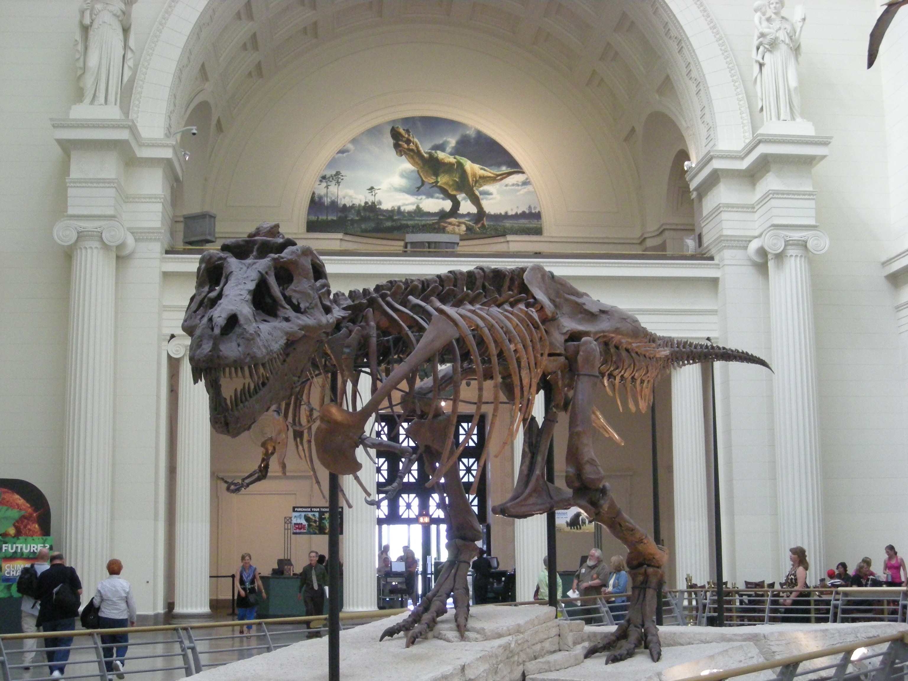
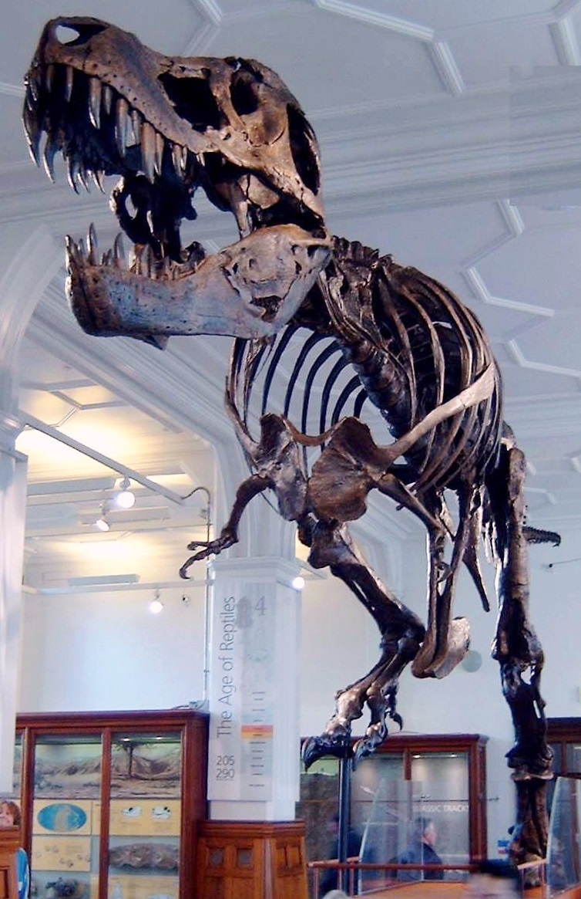
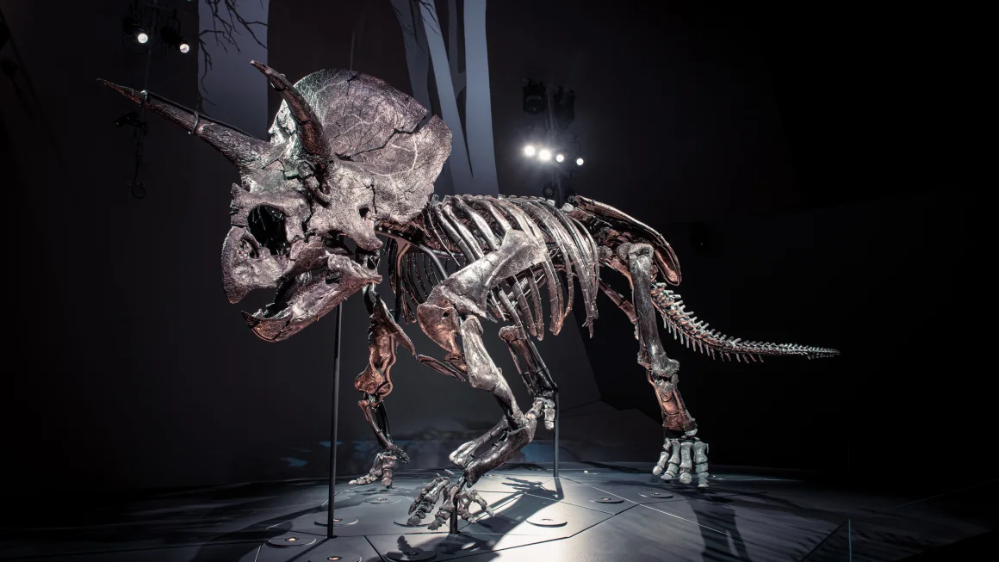
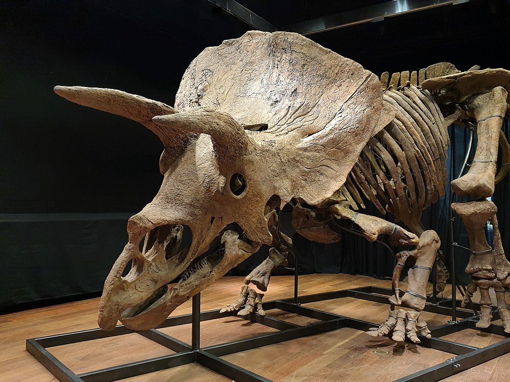

It is the largest, best preserved and most complete T-rex ever to be discovered. It is 12.3 meters long and stands close to 4 meters tall when measured at its hip. It was discovered in South Dakota by Sue Hendrickson in 1990. Before Sue's discovery, palaeontologists had only ever discovered up to 60% complete fossils of T-rexes. Finding Sue's phenomenal fossil frame was an incredible advancement towards the understanding and study of this mighty species.
Later, after it's discovery, it was determined that Sue was a record 90 percent complete by bulk, and 73 percent complete counting the elements. Of the 360 known T-rex bones, around 250 have been recovered. Scientists believe that this specimen was covered by water and mud soon after its death, which prevented other animals from carrying away the bones. Additionally, the rushing water mixed the skeleton together.
When the fossil was found, the hip bones were above the skull and the leg bones were intertwined with the ribs. The large size and the excellent condition of the bones were also surprising. The skull was 1,394 mm long, and most of the teeth were still intact. After the group completed excavating the bones, each block was covered in burlap and coated in plaster, followed by a transfer to the offices of the Black Hills Institute, where they began to clean the bones.

Sue's exhibit
Stan
Stan is a Tyrannosaurus rex fossil found in the Hell Creek Formation in South Dakota, just outside of Buffalo in 1987, and excavated in 1992. It is the fifth most complete T-rex fossil discovered to date, at more than 70% bulk. Originally, it was thought that the fossil was that of a Triceratops.
The most notable aspect of Stan is his nearly complete and perfectly preserved skull. It is widely regarded as the best T-rex skull ever discovered. Although the bones were separated from each other before excavation, they were in pristine condition and ideal for study by researchers. According to Pete Larson of the Black Hills Institute, Stan's skull has enabled scientists to learn more about the T. rex's cranial kinesis, or movement of the skull bones, than any other T. rex specimen.
According to Pete Larson of the Black Hills Institute, Stan's skull has enabled scientists to learn more about the T-rex's cranial kinesis, or movement of the skull bones, than any other T-rex specimen. Stan is approximately 11.78 m in length, 3.64 tall at the hip, and is estimated to be around 66 million years old.

Stan's exhibit
Triceratops fossils
Horridus
It was given the name Horridus by its owner Museums Victoria, Australia's largest public museum organization, from where it was loaned to The Museum of Paleontology from Bucharest. The nickname is derived from its full name Triceratops horridus, and it lived 67 million years ago. Also paleontologists are rarely able to decipher a dinosaur specimen's sex, so it's not clear if this Horridus was male or female.
Horridus is nearly 85% complete, standing about 2.5 meters tall, 7 meters long and weighing 1,000 kilograms. The skull is 98% complete and features three horns along with a majestic frill, the flat bone plate jutting out from the top of the Triceratops' head.
Not much is known about how the plant-eating dinosaur became so perfectly preserved, but experts believe that the creature would have had to been buried shortly after dying.

Horridus's exhibit
Big John
Big John is a 66 million years old fossilized Triceratops horridus skeleton discovered in South Dakota's Hell Creek geological formation in 2014 by paleontologist and professional fossil hunter Walter W. Stein. It is the largest known Triceratops skeleton, according to the team that assembled the fossil.
The skeleton is over 60% complete, with a skull that is 75% complete. It was nicknamed "Big John", after the owner of the ranch where it was found. The skeleton is 3 metres high and 8 metres long. The remains, which weigh over 700 kilograms, include a 2.62 metres collarbone. The two top horns are over a metre long. According to Zoic, the team that assembled the fossil, Big John is about 5-10% larger than any other known Triceratops.
Big John bears a keyhole-shaped traumatic lesion (approx. 20 cm x 5 cm) on its right squamosal bone, which is possibly the result of a fight with another Triceratops. The authors of a 2022 study concluded that the lesion was not simply an anatomical variation, based on the irregularity of its margins and the lack of similar structures in other Triceratops or Anchiceratops specimens, but an old injury that has slightly healed, meaning it was not the cause of death.

Big John's exhibit
Plesiosaur fossils
First Elasmosaur in Australia
It measures around six metres in length and because the head is so far away from the body at the end of this little neck, that's one of the first things that gets disarticulated from the rest of the skeleton.
Palaeontologists unearthed the complete fossil of the plesiosaur near the remote western Queensland town of McKinlay after a property owner sent images to researchers.
It gave the reserchers the ability to understand the biodynamics of these types of animals, how they move, what sort of environments they need to be in and how a skeleton is put together.
Image of the Elasmosaur at the digsite
Raffle
A unique Jurassic plesiosaur is now on public display at The Museum of Paleonthology from Bucharest. It is one of the few 3D Lower Jurassic plesiosaur in the world and this 200 million year fossil has been loaned to our Centre for display.
This incredible fossil was discovered by Tracey Barclay and her dog Raffle in 2007. It has taken a team of experts 16 years of painstaking and intricate preparation to be able to finally mount and display this unique three-dimensional specimen. This specimen is 70% complete. The missing bones have been cast and modelled from the other existing bones of the skeleton.
Named after Raffle, Tracey’s dog, who was sat on the first exposed bone which led her to the discovery. The plesiosaur was preserved within the famous ammonite pavement of Monmouth beach, Lyme Regis. The site was monitored over the next year. Natural erosion revealed more articulated vertebra. Tracey and her partner Chris Moore then got permission from Natural England to extract this very rare skeleton.